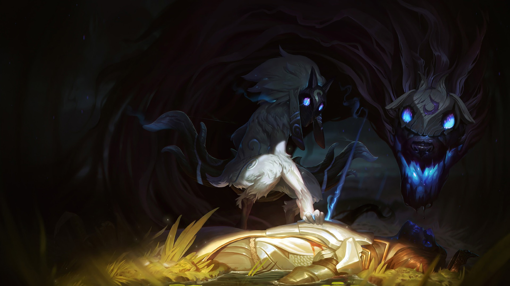
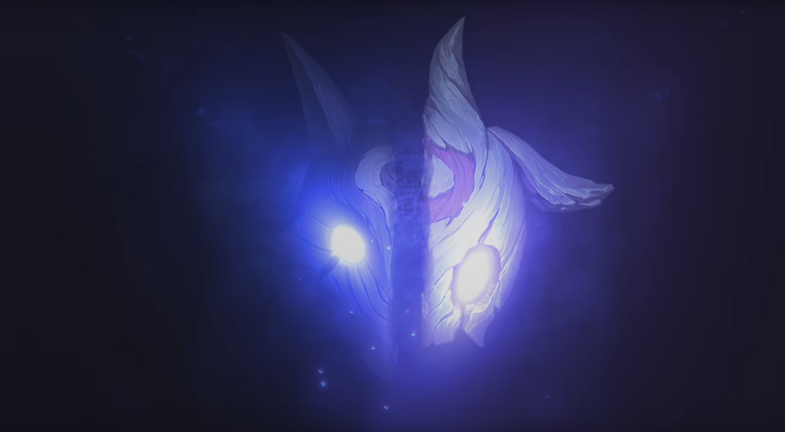
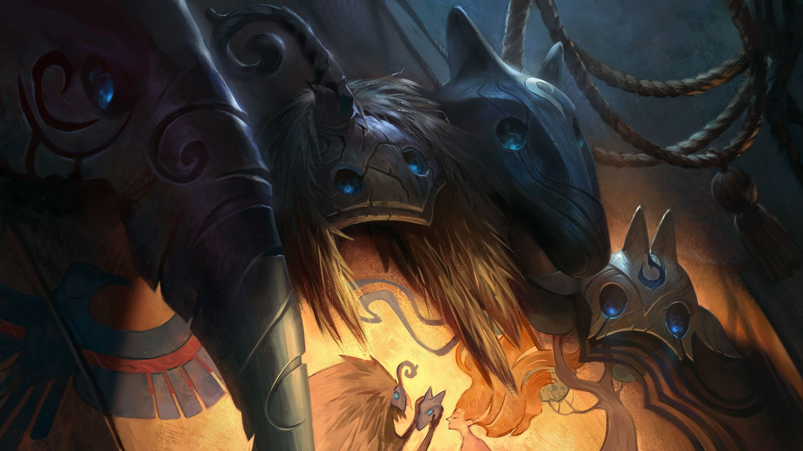

Истории

Киндред
Биография
Киндред – это воплощение смерти, разделенное надвое; два духа-близнеца, которые никогда не расстаются. Стрелы Овечки быстро избавляют от тревог тех, кто смирился с судьбой.

Рассказ
Лес за деревьями
Поле битвы перед ними напоминало стол с изысканными яствами. Такие вкусные жизни, столько из них можно завершить, за столькими можно поохотиться. Волк носился по снегу, а Овечка кружилась от лезвия меча к наконечнику копья, но кровавая бойня не оставляла пятен на ее белоснежной шерсти.

Рассказ
Финал Соуты
Автор: Мэттью Данн
Тарнольд понял, что постановка обречена на провал, когда у него закончились режиссерские уловки. Перед выступлением у артистов начался мандраж. Может, дело было в тексте, а может – в суевериях.